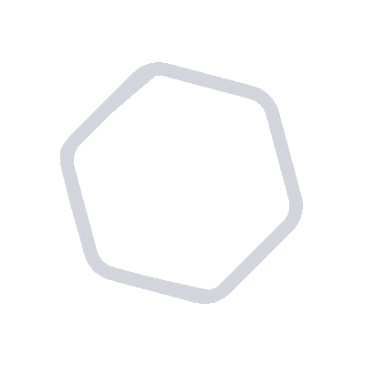

Blog
Categories
Our Authors
Get a demo
Get a demo
Login
All Tool stack Posts
Load more articles

Rapid setup, easy deployment.
Get started today.
Seamless onboarding • Enterprise grade security • Concierge support
Get a demo